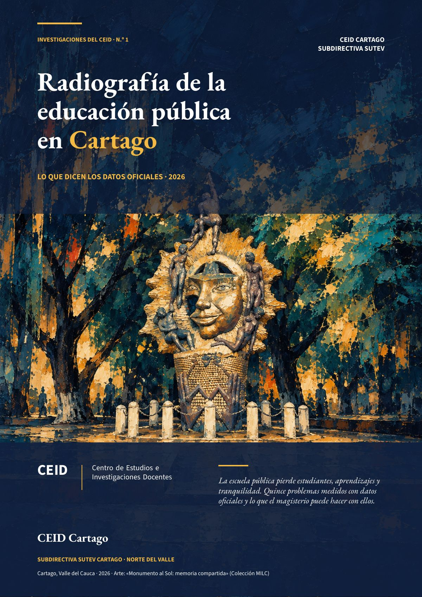

Radiografía de la educación pública en Cartago
La escuela pública pierde estudiantes, aprendizajes y tranquilidad. Quince problemas medidos con datos oficiales y lo que el magisterio puede hacer con ellos.
- 69,6 %cobertura neta en 2024 (Colombia: 88,2 %)
- −18,3 %matrícula oficial entre 2019 y 2025
- 7,35 %deserción en secundaria oficial (2024)

Cartago es una ciudad de 144.206 habitantes con una escuela pública que se está vaciando. Esta radiografía reúne lo que dicen los datos oficiales del Ministerio de Educación, el ICFES, el DANE, el DNP, Medicina Legal, el Servicio Geológico Colombiano y la propia Alcaldía. No hay en ella cifras estimadas: donde un dato no existe para Cartago, se dice. Es la primera de las Investigaciones del CEID, la defensa de la educación pública hecha con datos que pide el artículo 52 del Estatuto del SUTEV.
La escuela pierde estudiantes
Casi uno de cada tres niños y jóvenes de 5 a 16 años no está matriculado en el nivel que corresponde a su edad.
Fuente: Ministerio de Educación Nacional (datos.gov.co, nudc-7mev y ji8i-4anb) y DNP, TerriData. Consulta: 5-11-2026.
La matrícula oficial pasó de 18.817 estudiantes en 2019 a 15.372 en 2025, con una población en edad escolar estable. Nadie ha explicado a dónde se fueron.
Fuente: Ministerio de Educación Nacional, matrícula 2010-2025 (datos.gov.co, ngw5-c5nw); cálculo propio sobre datos oficiales.
La secundaria es el punto de fuga
Siete de cada cien estudiantes de secundaria oficial abandonan durante el año, y la repitencia en ese tramo se duplicó desde 2021. La deserción se multiplicó después de la pandemia.
Fuente: DNP, TerriData, serie 4/2/1 (fuente primaria: Ministerio de Educación Nacional).
Lo demás que muestra la radiografía
- Los aprendizajes retroceden. En Saber 11, Cartago pasó de estar por encima del Valle y del país en 2022 a estar por debajo de ambos en 2025.
- La vida alrededor de la escuela pesa. La tasa de homicidios duplica la del país, la violencia sexual contra la primera infancia supera la del Valle y la del país, y la proporción de madres de 14 a 17 años es la más alta de las tres.
- El sismo del 10 de agosto encontró sedes viejas. De 38 sedes documentadas por el CEID, 32 quedaron afectadas.
- Faltan datos. Cartago no tiene tasa de extraedad, ni pruebas Saber de primaria, ni desempleo juvenil, ni pobreza posterior a 2018.
Lo que propone el CEID
- Explicar la caída de la matrícula con los retiros del SIMAT de 2019 a 2025, por institución, grado y destino.
- Hacer de la permanencia en secundaria la prioridad, con alertas tempranas por inasistencia y reprobación.
- Activar el SIUCE en los 35 establecimientos, para que la ruta de la Ley 1620 deje rastro.
- Medir lo que aprenden los niños antes de 11.º, con una prueba común de lectura y matemáticas en 3.º y 5.º.
- Reconstruir mejor las sedes dañadas, con cubiertas que también resuelvan el calor.
- Revisar las metas del Plan de Desarrollo con el magisterio, en una mesa técnica con docentes.
El documento completo trae doce gráficas, el método, sus límites y las referencias en APA.